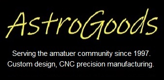
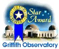

A California-based startup called Reflect Orbital aims to launch large mirrors in the sky that are expected to shine brighter than the moon with the aim of extending the productive hours of solar farms. An analysis by professional astronomers concludes "So, are mirrored satellites a practical means to produce affordable solar power at night? Probably not. Could they produce devastating light pollution? Absolutely.". Another article warns of severe eye-damage from the specular reflections as they are anticipated to be much brighter than the full moon. The American Astronomical Society which has had a long history of representing the interests of professional and amateur astronomers to the government has a survey which we encourage all night-sky enthusiasts to fill out. This is in light of the recent FCC license filing by the company to launch one of their blindingly bright satellites by 2026. Recall that SpaceX took astronomers' interests in mind and reduced the albedo of their Starlink satellites and are continuing to work with astronomers to reduce the impact, so your voice does matter!
Most Recent Additions |
|
|
{{entry.date}}
|
{% if entry.description contains '' %} {% comment %} The description already has a link {% endcomment %} {{entry.description}} {% else %} {{entry.description}} {% comment %} convenience version where the entire description links to the page {% endcomment %} {% endif %} |
|
||||||||||||
|
Love your site. It's a great place to find photographic fields of interest. I'm always looking for information on new objects to shoot.
— Martin C. Germano
At the monthly star parties everyone now expects me to show up with another rarely observed gem, carefully culled from the pages of your web site. I guess it's time to come clean about where I've been getting the information
— Paul Alsing
WOW! Your website is absolutely incredible! Where do you guys come up with all this stuff? Have you thought of doing a book or magazine on Observing Challenges?
— Jeremiah Burton
|
|
  AcknowledgementsSome of these articles first appeared in the monthly bulletin of the San Francisco Amateur Astronomers, the publications of the Webb Society and the AmAstro mailing list. Finder charts were produced on Megastar with RealSky. Megastar is available from Willman-Bell, Inc. RealSky is available from the Astronomical Society of the Pacific. Other images are from the Hubble Space Telescope (HST), NASA and the Digital Sky Survey (DSS). You can download your own DSS images, courtesy of the Space Telescope Science Institute. Accurate identifications, coordinates, and other useful data can be obtained through the NGC/IC Project, SIMBAD and the NASA/IPAC Extragalactic Database (NED. Do astronomy research online at the NASA Astrophysics Data System (ADS). |